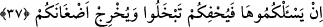
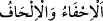
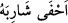
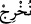
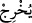
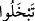
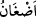

bâki ve yüce olan âhireti taleb etmeye teşvik, fâni ve alçak dünyadan tenfir ve
uzaklaştırma vardır.
Malına, mülküne makam ve mansıbına sakın güvenme,
Senden öncekiler böyle yaptı, sonrakilerde böyle olacak.
A benim canım, dünya karşılığı âhireti alabilirsen,
Hemen al, yoksa pişman olursun.
Muzaf olan çoğullar genel kalıplar olup bundan murad edilen Allah Teâlâ mallarınızın
hepsini istemez demektir. Allah mallarınızdan onda birin dörtte birini yâni kırkta bir,
yüzde iki buçuk yahut öşrî mallardan fakirlere vereceğiniz onda bir nispette az bir
miktarla yetinmiştir. Siz gönlünüzü hoş niyetinizi hâlis tutunuz.
37. Eğer onları isteseydi de sizi sıkıştırsaydı, cimrilik ederdiniz ve kinlerinizi
ortaya çıkarırdı (Allah’ın Elçisine kin beslemeğe başlardınız).
“Eğer onları” mallarınızın hepsini talep ederek “isteseydi de” istemede mübalağa
edip yâni her şeyinizi infâk ediniz deseydi, böylece “sizi” zorlayıp “sıkıştırsaydı,
cimrilik ederdiniz ve kinlerinizi ortaya çıkarırdı (Allah’ın Elçisine kin beslemeğe
başlardınız).”
Zira
(ihfa ve ilhaf), mübalağa etmek ve sona ulaşmaktır.
(ahfâ
şâribehu: bıyığını kesti) denilir ki “onu kökünden kesti” demektir. Burada kinleri ortaya
çıkaran Allah Teâlâ’dır. Bu kelimenin azamet nunuyla
(nuhric: biz çıkarırız)
şeklinde okunması da bu mânâyı teyid etmektedir. Yahut burada
(yuhric)
kelimesinin faili
(tebhalû) fiilinin zımnında bulunan buhl yâni cimriliktir. Çünkü
kinin sebebi cimriliktir.
(adğân) kelimesinin tefsiri bu surede yirmi dokuzuncu
âyette geçmiştir.
Aynü’l-meânî’de şöyle denilmiştir: Mallarınızı vermek istemediğiniz zaman Allah
kinlerinizi ortaya çıkaracaktır.
Katâde şöyle demiştir: Allah Teâlâ, ademoğlunun, malını isteyene kin tutup ondan öç
ve intikam alacağını bilmektedir. Bu âyete şöyle bir mânâ da verilmiştir: Allah Teâlâ
kalplerinizde olan mal sevgisini çıkarır atar. Bu mertebe nefsin cimriliğinden
korunanlar içindir. Dünya ve âhiret köleliğinden kurtulup hür olan Allah dostlarına ve
hakkı taleb etmekte mertebeleri yüksek olan zevâta gelince, zerre kadar bir şeyi
kendilerine bırakmak istemelerinde onlara müsamaha gösterilmez. Onlardan bu uğurda
canlarını fedâ etmeleri istenir. Onlar da bütün bu ödemeleri istilzam edip kabullenmek